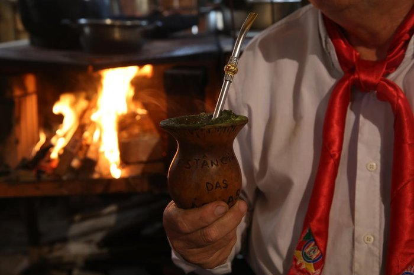

como os gauchos chegarama em curitiba e qual é a importância deles em curitiba
a história dos gauchos em curitiba A vivência dos gaúchos no Paraná é marcada pela preservação de seus costumes e tradições, que foram trazidos principalmente por famílias vindas do Rio Grande do Sul. Mesmo vivendo em outro estado, muitos mantiveram hábitos que fazem parte de sua identidade cultural e os transmitiram às novas gerações. Entre os costumes mais conhecidos estão o hábito de tomar chimarrão, preparar churrasco em reuniões familiares, usar roupas típicas em festas tradicionalistas e participar dos Centros de Tradições Gaúchas (CTGs). Também é comum valorizar a vida no campo, a convivência em família, o respeito às tradições e a hospitalidade. Ao longo dos anos, os gaúchos passaram a conviver com pessoas de diferentes origens que vivem no Paraná, compartilhando seus costumes e também adotando hábitos da cultura paranaense. Essa troca cultural contribuiu para enriquecer a diversidade do estado e fortalecer o respeito entre diferentes tradições. Assim, a vivência dos gaúchos no Paraná demonstra como é possível preservar a própria cultura ao mesmo tempo em que se constrói uma convivência harmoniosa com outras comunidades.

importância cultural dos gauchos no paraná
A chegada dos gaúchos ao Paraná aconteceu em diferentes períodos da história e contribuiu para o desenvolvimento econômico e cultural do estado. Muitos migrantes vieram principalmente do Rio Grande do Sul em busca de terras férteis para a agricultura e a pecuária, especialmente entre as décadas de 1950 e 1970. Esses grupos se estabeleceram, principalmente, nas regiões Oeste, Sudoeste e Centro-Sul do Paraná. Eles trouxeram técnicas de cultivo, criação de gado e formas de organização das propriedades rurais que ajudaram no crescimento da produção agrícola. Além disso, participaram da fundação e do desenvolvimento de diversos municípios. A cultura gaúcha também deixou marcas importantes no Paraná. Tradições como o chimarrão, o churrasco, as danças típicas, as festas tradicionalistas e os Centros de Tradições Gaúchas (CTGs) passaram a fazer parte da vida de muitas comunidades paranaenses. Dessa forma, a migração dos gaúchos teve grande importância para a história do Paraná, influenciando sua economia, sua cultura e a formação da população, especialmente nas regiões onde esses migrantes se estabeleceram.
importância cultural dos gauchos
Os gaúchos tiveram um papel muito importante no desenvolvimento do Paraná. Ao chegarem ao estado, eles contribuíram para o crescimento da agricultura e da pecuária, trazendo novas técnicas de cultivo e de criação de animais. Esse trabalho ajudou a aumentar a produção de alimentos e fortaleceu a economia de diversas regiões. Além da contribuição econômica, os gaúchos também influenciaram a cultura paranaense. Costumes como o chimarrão, o churrasco, as danças tradicionais e os Centros de Tradições Gaúchas (CTGs) passaram a fazer parte da vida de muitas comunidades. Essas tradições ajudam a preservar a história e a identidade dos descendentes de gaúchos no estado. A presença dos gaúchos também colaborou para o crescimento de cidades e para a ocupação de novas áreas, principalmente nas regiões Oeste e Sudoeste do Paraná. Por isso, a participação dos gaúchos foi fundamental para o desenvolvimento econômico, social e cultural do estado, deixando um legado que permanece até os dias de hoje.